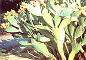

Despite its sharp "armor", this desert dweller has long been sought as a fruitand vegetable.
Joanadel Hurst In tales about the West, the cactus is sometimes portrayed as a water-bearing plant that saves thirsting cowpokes lost in the desert. But any hungry range rider worth his spurs would know that some types can provide right good eating, too, especially those known as Indian figs, nopales, prickly pears, or beaver tail cacti.
In fact, there are dozens of varieties of these hardy forageables. They're members of the genus Opuntia, which encompasses well over 200 species. These can be divided into two broad groups: the inedible - or at least basically unpalatable - cholla cacti (which have slender, rounded stems) and the edible prickly pears (distinguished by flat pads resembling beavers' tails).
Many people are surprised to learn that some kinds of prickly pear cactus can be found as far east in this country as Massachusetts. For the really good eating types, though, you have to go to the Southwest, where the spiny plants can be seen growing wild along highways and on the open range. In some areas, in fact, they've become so numerous that they're considered a pest weed by ranchers and farmers.
In Mexico, though, the cacti are raised commercially, and the fruit (called tuna ) and the edible pads ( nopales ) are marketed. If you don't have access to wild cactus and can't grow it in a backyard patch, you may be able to find it canned in the Mexican foods section of your supermarket.
GATHER YE CACTICAREFULLY
Although it's a great low-cost food, cactus is shunned by most folks simply because they're intimidated by the plant's spikes and bristles. This is understandable, since the spines (which are virtually absent in some species) and the tiny, bristly glochids (the real troublemakers) can inflict irritating wounds. But the fact is, gathering can be a safe and easy task if you use the proper equipment: a sack, a sharp knife, a long handled fork or tongs, and heavy gloves.
To "pick" a pad or pear, jab the quarry with your fork, or grab it with tongs, to get a firm hold on it . . . cut it off at the joint . . . and drop the harvest into your bag.
Once you've gathered a sufficient supply of pads or pears and brought them home, you can proceed to remove their bristles and spines: Again using your fork or tongs, hold your wild fruit or vegetable under running water and scrape the spikes off with a knife (another method is to burn the prickles away over an open flame or a charcoal fire).
If you do get some glochids in your fingers, try running the edge of a blade across the area - in a shaving motion - to extricate them. Tweezers are sometimes necessary for getting rid of the more minute or deeply embedded offenders.
EATING THE FRUIT
Called Indian figs or prickly pears, the lemon-or plum-shaped fruit of the Opuntia cacti ripen in late September. When mature, their outsides become bright red and the insides turn fiery orange (some varieties - not quite as sweet as the red prickly pear - are yellow on the outside when ripe and green inside). They make fine syrups, preserves, and jellies . . . and, in some parts of Mexico, the tunas are fermented to produce a heady liquor.
But more popular ways to enjoy the fruit are fresh off the vine (after de-bristling the edibles, of course!) and chilled, as a refreshing treat on a hot day. Just cut off the ends, split the pear lengthwise, and scoop out the sweet, jellylike innards with a spoon . . . or peel the fig and eat it whole (it tastes like a giant berry or a tiny watermelon). Some people discard the many small seeds, while others eat them right along with the fruit. The members of some Native American tribes are said to have dried the nuggets and then ground them into flour.
EATING THE PADS
The green pads of the cactus (technically speaking, they're stems ) can be harvested year 'round. In any event, it's best to choose small, tender specimens. Remove their bristles and spines . . . trim off the edges . . . dice the "meat" into half-inch squares (or simply cut the food into green bean-sized strips) . . . and they'll be ready to use in a multitude of dishes.
You can eat the cactus raw, by itself or in a tossed salad (it tastes like a mild lemon). You can fry it (either unbreaded with diced onions or rolled in egg and flour), boil it (serve it with butter, salt, and pepper), use it in soup, or saucé it and mix it into an omelet. When cooked, although the vegetable tends to become a bit slimy, its flavor is unique and (to most) quite agreeable.
Here's a recipe for a tasty, spicy dish:
CACTUS CREOLE
2 cups of diced cactus
1 pound of hamburger (cooked and drained)
6 ounces of tomato paste
1 cup of water
1 diced jalapeño pepper
6-1/2 ounces of canned shrimp (drained)
salt and pepper to taste
Mix all the ingredients together in a pan and cook them over medium heat for about 20 minutes or until the cactus turns a deep green. Serve hot over noodles, rice, or potatoes . . . or in pita bread or a folded tortilla. It's delicious!
Cactus also tastes great with fish. Here's a recipe for pescado, desert-style:
CACTUS OVER FISH
1/2 cup of cooking oil
1 clove of garlic (chopped)
1 teaspoon of chili powder
1 cup of flour
1 pound of filleted fish
1 cup of diced and boiled cactus
1/2 cup of water (from the boiled cactus)
1 hard-boiled egg, sliced
2 teaspoons of lemon juice
salt to taste
Heat the oil in a frying pan, sauté the garlic until light brown, and then remove the garlic pieces with a slotted spatula or spoon. Combine the chili powder and flour in a bowl and roll the fish in the mixture. Fry the coated fillets until they're golden brown . . . add the water (be careful to prevent spattering - pour in just a bit at a time). . . reduce the heat . . . and cook the fish for a few minutes longer. When the fish flakes easily, remove it from the pan and serve it smothered in cactus and topped with sliced egg, lemon juice, and salt.
|
 |
|
|